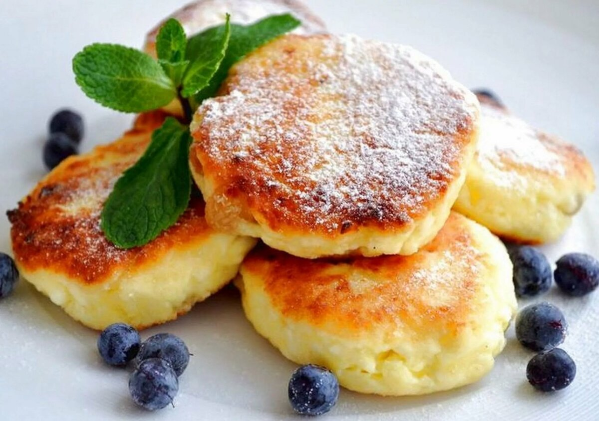
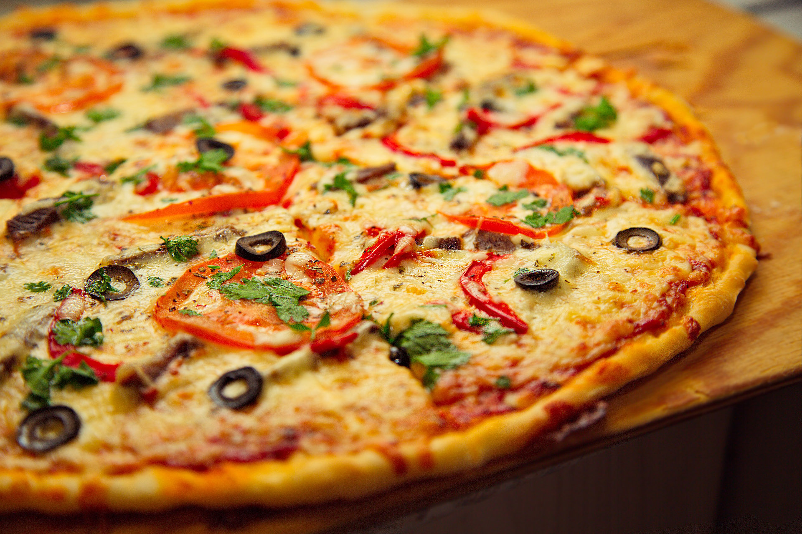
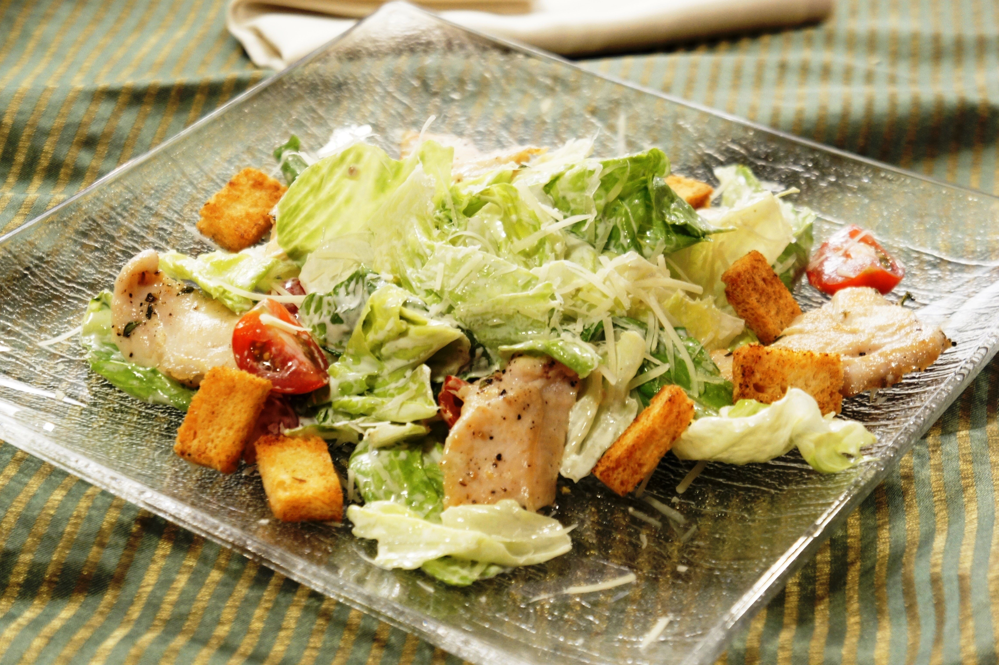
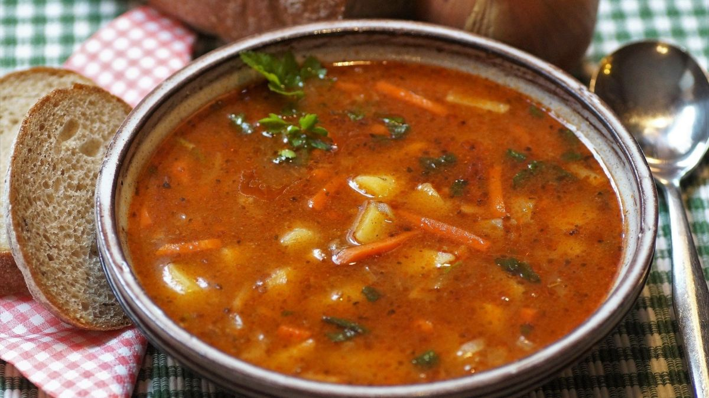

Сырники
Сырники (творожники) — главное блюдо завтрака, чудно настраивающего на прекрасный день,
любимое детское блюдо, угощение на десерт, лакомство на перекус среди дня... Хороши горячими
, но вкусны и холодными.
А готовят их, конечно же, из творога. Самого свежего и вкусного. Какой он будет жирности — дело вкуса и личного опыта
по части приготовления сырников. И его, чтобы сырники удались на славу до последней крошки, рекомендуется протереть
через сито или растереть в однородную массу в блендере.
Еще в сырники кладут сырое яйцо. И для того, чтобы масса держала форму
— муку или манку. Причем манку нужно оставить в смеси на 20-30 минут, чтобы набухла.
Подходящие наполнители для сырников - это цедра цитрусовых, измельченные сухофрукты и изюм,
орешки, сушеная клюква, иные ягоды.
Чтобы сырники не разочаровали, лучше сперва на пробу приготовить один, и тогда, если что нужно,
дополнить смесь нужным количеством ингредиентов.
Готовят сырники, сформировав их в виде небольших (обычно круглых) котлеток и запанировав в муке,
обжаривая на хорошо разогретом растительном или сливочном масле, можно под крышкой. А иногда только
подрумянивают на сковороде и допекают в духовке.
Можно на противне, застеленном пекарской бумагой, а можно, уложив в форму и залив сверху соусом из сметаны
с сахаром и корицей в смеси с кубиками яблок и груш.
Подают сырники, посыпав сахарной пудрой, дополнив ягодами, кусочками фруктов, чуть-чуть томленными в сиропе
из сахара и собственного сока. Сырники едят с медом, сметаной.
Несладкие сырники отличаются тем, что, во-первых, в них не кладут сахар (но нужна соль), а во-вторых,
отличаются и их наполнители. Разнообразная зелень (например, петрушка и зеленый лук), тертая морковка, сыр... Несладкие творожники хорошо подать под сметанным соусом с добавлением зелени и чеснока.

Пицца
Пицца - известное на весь мир национальное блюдо Италии в форме открытого круглого пирога, покрытого по классическому
рецепту томатами и расплавленным сыром (обычно моцареллой). Такая начинка на профессиональном языке кулинаров называется топпинг.
Считается, что прототип пиццы подавали на стол еще древним грекам и римлянам: некоторые блюда они готовили на хлебных ломтях. А официальной столицей
этого итальянского кушанья называют Неаполь. Здесь даже существовала профессия «pizzaioli» - так называли людей, которые готовили пиццу для крестьян.
Это блюдо придумали после того, как в 1552 году впервые в Европу завезли из Перу помидоры. Помимо томатов, неаполитанскую пиццу наполняли сыром,
морепродуктами, мясом, грибами и овощами.
В те времена пицца считалась едой бедняков. Но однажды она полюбилась и представителем аристократии. Первой, кто не скрыла своей любви к этому народному
продукту, была супруга неаполитанского короля Фердинанда IV Мария-Каролина Габсбург-Лотарингская. После нее свое пристрастие к пицце не утаивали король
Умберто I и его супруга Маргарита Савойская.
С первых дней создания это итальянское блюдо выпекали в печи и продавали прямо на улице. Уютные крытые заведения, которые сегодня именуются пиццериями,
появились гораздо позже.
Данное блюдо быстро распространилось по всему миру, но наибольшим спросом оно пользуется в Европе и Америке. Секрет притягательности пиццы кроется в
простате ее приготовления, питательности и огромном разнообразии рецептов. Лишь одни американцы придумали с десяток способов ее приготовления:
они пекут пиццу нью-йоркскую, чикагскую, калифорнийскую, гавайскую и др. В разных странах этому блюду придают своих национальных штрихов.
В Израиле, например, популярна частично кошерная пицца, а японцы готовят «окономияки» - это жареная лепешка, начиненная морепродуктами и овощами,
смазанная специальным соусом и присыпанная стружкой из тунца.

Салат Цезарь
Цезарь — это популярный во всём мире салат, он является самым известным блюдом североамериканской кухни.
Салат Цезарь нынче стал столь популярен, что обязательно присутствует в меню большинства кафе и ресторанов не только США и России, но и многих стран мира.
Достоинством салата Цезарь является лёгкость, пикантность, изысканный вкус и низкая калорийность.
В классической версии основными ингредиентами салата являются пшеничные крутоны, листья салата-ромэн и тёртый пармезан, заправленные особым соусом, который и составляет суть рецепта.
Основа заправки «Цезарь» — свежие яйца, выдержанные 1 минуту в кипятке и охлаждённые. Яйца взбиваются с оливковым маслом и приправляются чесноком, лимонным соком и вустерским соусом.
В классическом виде салат получается довольно лёгким, поэтому к нему часто добавляют более калорийные ингредиенты, например, крутое яйцо или жареную курицу.
Салат получил название не по имени Гая Юлия Цезаря, а по имени человека, наиболее часто называемого изобретателем этого блюда — американского повара итальянского происхождения Цезаря Кардини (Caesar Cardini), который в 20-40-х годах XX века владел несколькими ресторанами в городе Тихуана, находящемся на территории Мексики (поскольку от Сан-Диего Тихуану отделяет только граница, такое выгодное положение позволяло Кардини избегать ограничений Сухого закона).
По легенде, салат был изобретён Кардини 4 июля 1924 года (в День независимости США), когда на кухне почти ничего не осталось, а посетители требовали пищи.
По свидетельству дочери Цезаря Кардини, её отец, вопреки распространённой версии рецепта, никогда не добавлял в салат анчоусы (лёгкий рыбный привкус в соусе обуславливается наличием анчоусов в составе вустерского соуса).
Легенда о том, что в салате якобы присутствовали анчоусы, появилась благодаря брату Цезаря, Алексу Кардини, который добавил анчоусы и назвал блюдо «Салат Авиатора» (Алекс служил военным летчиком).
В 1953 году салат «Цезарь» был отмечен Эпикурейским обществом в Париже как «лучший рецепт, появившийся в Америке за последние 50 лет».

Щи
Русские щи (старинное название шти) представляют собой горячее первое блюдо на основе квашеной или свежей капусты, которое готовилось с незапамятных времен на Руси и имеет многовековую историю. Менялись эпохи, власть, люди и обычаи, неизменным оставалось одно – горячие наваристые щи, иногда бедные или пустые (постные на основе грибов и овощей), иногда богатые (мясные или рыбные) на столе практически каждого русского человека. Их ели все от мала до велика: и цари, и крестьяне, щаной дух стоял и в бедных избушках, и в купеческих теремах, значение этого блюда в жизни русского человека было огромным, отсюда и большое число поговорок на эту тему:
«Щи да каша — мать наша»;
«Щи всему голова»;
«Где щи — тут и нас ищи».
Обязательными для любых щей является зеленая масса (капуста, щавель и т.д.) и кислая заправка, главным их признаком должна быть пикантная кислинка, которая достигается за счет добавления кислой капусты, рассола с неё, соленых грибов, развара кислых яблок, сметаной или кислым молоком в щах из свежей капусты. Одна из особенностей русской кухни – все овощи закладываются в щи сырыми, их не нужно обжаривать или пассировать.
В первую очередь с морковкой и корнем петрушки и луком готовится мясной (из говядины), рыбный или грибной бульон, в него кладется свежая или кислая капуста (которую нужно проварить отдельно и готовой добавить в бульон) или заменяющая её зеленная масса. Когда овощи сварятся и станут мягкими добавляют соль и пряности.
Подавались щи, заправленные сметаной или простоквашей, их ели вместе с ржаным или пшеничным хлебом вприкуску "до пустой тарелки".
Щи обладают большим количеством положительных свойств, характерных для всех овощных блюд. В капусте, как в кислой, так и в свежей, содержится большое количество клетчатки, полезных минералов и витаминов. Это блюдо благотворно влияет на работу нашей пищеварительной системы, легко переваривается, не утяжеляя желудок, благодаря наличию сложных углеводов в составе надолго утолит ваш голод и конечно приобщит к истории русского народа, его традициям и обычаям.